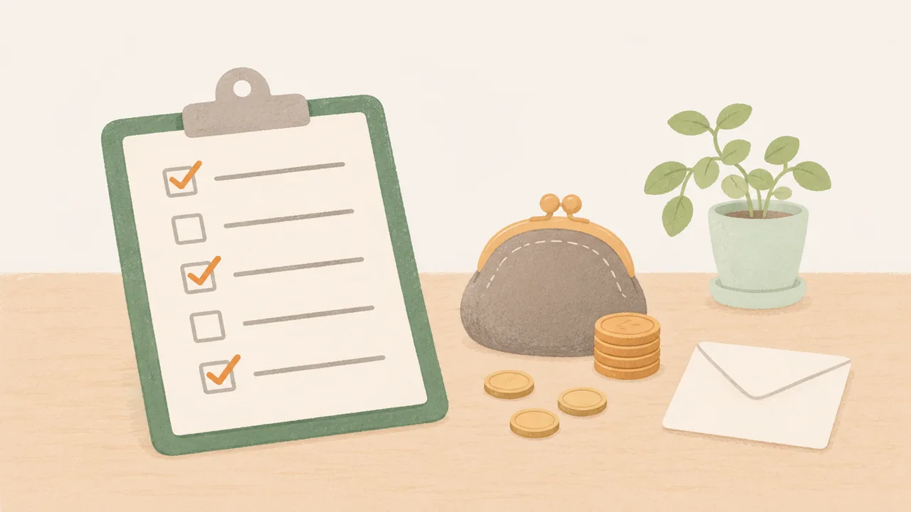

このブラウザでは、チェックを保存できません。バックアップの方法をご覧ください。
LINEの中で開いています。チェックを残すには、Safari・Chromeで開き直すのがおすすめです。
← 特典の一覧へ
お金のチェック表(休む前・休職中・辞める前)
当てはまる数で何かを決めるものではありません。確認できていない項目から、会社や窓口に聞いてください。金額は人によって違うので、ここには書いていません。
休む前に、会社(人事)に確認すること
傷病手当金を申請する時
通院のお金
辞める前に確認すること
チェックは自動で保存されます。
バックアップ
※診断や休職、退職の判断を示すものではありません。医師と、会社の相談先に確認してください。
※厚生労働省、協会けんぽなどの公的資料をもとに作成しています(2026年11月時点)。制度は会社や保険者で違うことがあり、変わることもあります。